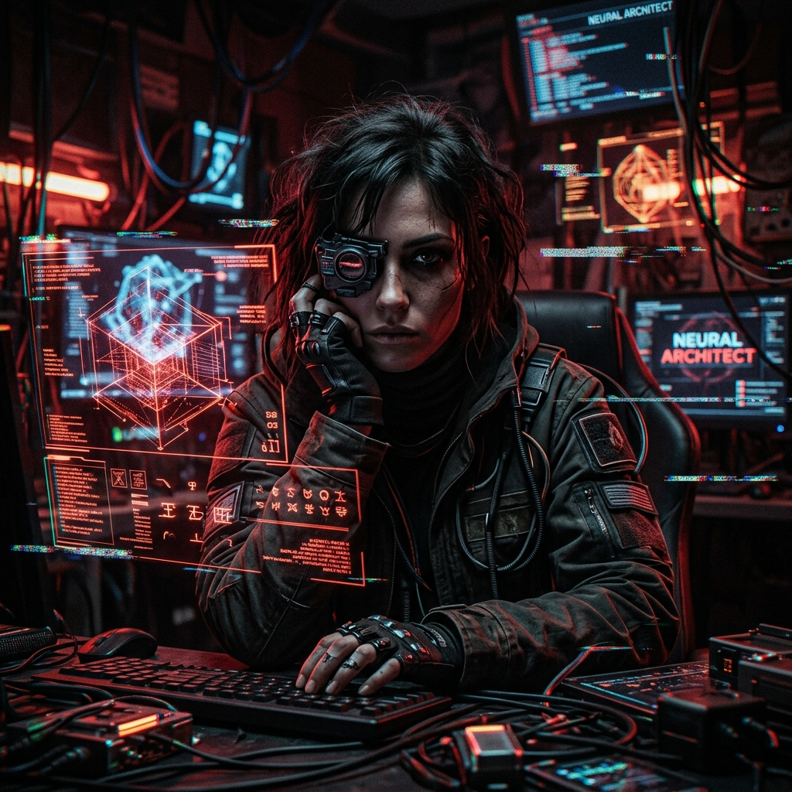
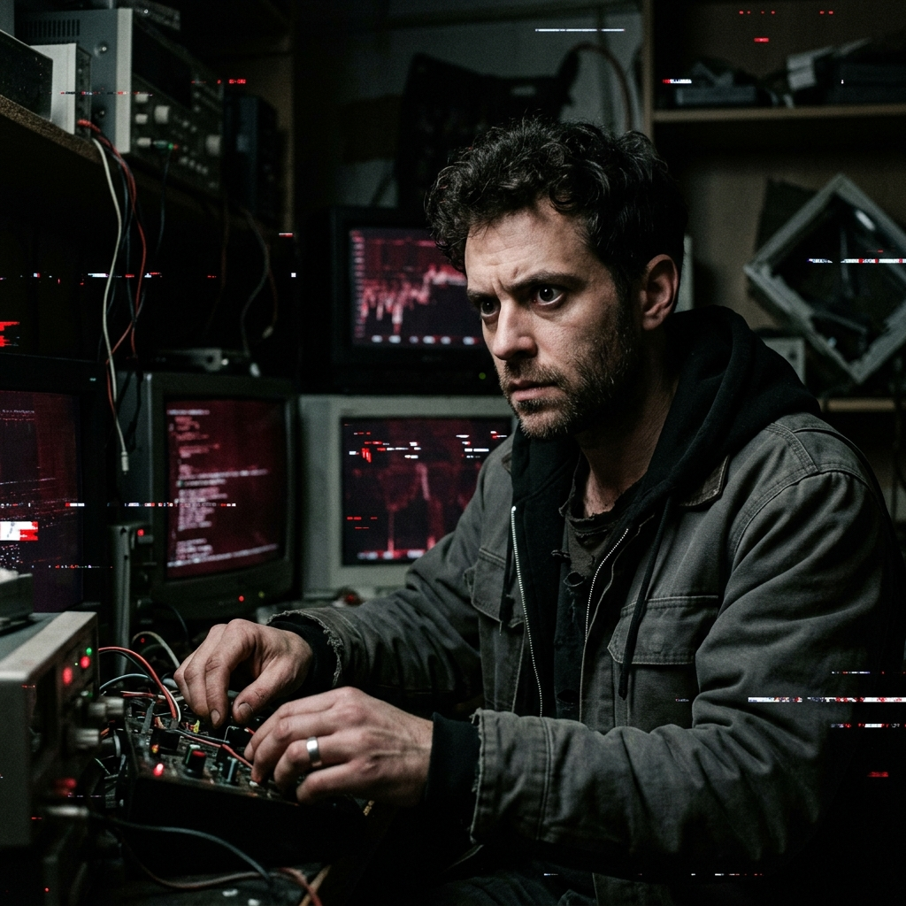

ARCHITECTS
TEAM
INITIATING SEQUENCE...
LOADING PROTOCOLS...
ACCESS GRANTED.
SCROLL TO DESCEND

SYS.ID // 001
STATUS: ACTIVE
[01]
박은솔
WORLD & EXPERIENCE DESIGNER
기만적인 평화의 규칙을 설계하고, 파멸로 향하는 치밀한 심리적 동선을 통제합니다. 플레이어가 완벽해 보이는 낙원 속에서 미세한 시스템의 오류(Glitch)를 눈치채고 탈출을 시도하는 찰나를 포착합니다. 그 순간, 의심 없이 머물던 세계 전체가 거대한 함정으로 돌변하여 플레이어를 옥죄는 구조적인 공포를 완성합니다.
[02]
권혁민
SENSORY & ATMOSPHERE DESIGNER
시청각적 왜곡과 치밀한 연출로 '낯선 차원의 공포'를 신경계에 직접 각인시킵니다. 안전하다고 믿었던 낙원이 무너지는 순간, 기괴하게 일그러지는 비주얼과 공간을 잠식하는 불협화음의 사운드를 결합합니다. 플레이어가 스크린 너머의 미지의 심연에 직접 갇힌 듯한, 숨막히는 공감각적 절망을 설계합니다.

SYS.ID // 002
STATUS: ACTIVE
OBJECTIVE
VOID는 단순한 점프 스케어보다, 사람 내면에 있는 근원적인 공포와 몰입감을 새로운 방식으로 표현하는 공포 게임 브랜드입니다. 비주얼, 분위기, 사운드, 연출의 완성도를 통해 플레이어가 낯선 차원의 공포를 직접 체험하는 감각을 만드는 데 집중하고 있습니다.